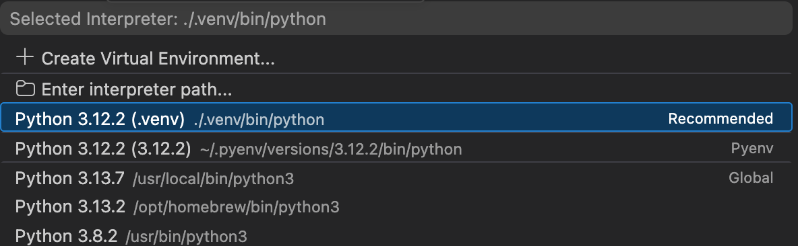
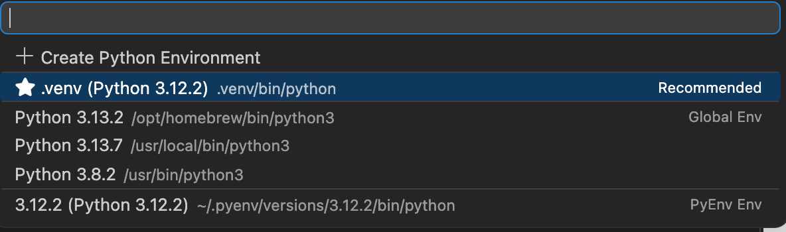

Creating and Using a Python .venv in VS Code
Introduction
A virtual environment helps isolate project dependencies, avoid version conflicts, and improve reproducibility across projects. In this guide, the environment is named .venv, which is a common convention and works well with Visual Studio Code.
This guide also clarifies one of the most common sources of confusion when working with Python in VS Code:
- a Python interpreter is used to run regular scripts such as
.py - a Jupyter kernel is used to run notebook cells in
.ipynbfiles and other notebook-based interfaces
For scripts, focus on the Python interpreter.
For notebooks, focus on the Jupyter kernel.
In both cases, the safest option is to use the Python installation inside your local .venv.
Prerequisites
Before starting, make sure you have installed:
- Python
- Visual Studio Code
- Quarto if you also plan to work with
.qmdfiles - Jupyter support through packages installed inside your environment
Key concepts
What is .venv?
A .venv is a local Python virtual environment stored inside your project folder. It contains its own Python executable and its own installed libraries, which helps keep one project independent from another.
Python interpreter vs. Jupyter kernel
These two concepts are related, but they are not the same.
Python interpreter
The Python interpreter is the executable that runs Python code.
Typical examples:
./.venv/bin/pythonon macOS/Linux.venv\Scripts\python.exeon Windows
When you run a .py file in VS Code, the editor uses a selected Python interpreter.
Jupyter kernel
A Jupyter kernel is the execution engine used by notebook-based tools such as:
- Jupyter Notebook
- JupyterLab
- VS Code notebooks (
.ipynb) - Quarto documents with Python code cells
A Jupyter kernel is usually associated with a specific Python interpreter. In practice, you want the notebook kernel to use the Python interpreter inside your .venv.
- For
.pyfiles, select the correct Python interpreter - For
.ipynbfiles, select the correct Jupyter kernel - Ideally, both should point to the Python installation inside
.venv
Step 1. Create the virtual environment
Create the environment from the root of your project.
macOS and Linux
cd path/to/your/project
python -m venv .venvWindows
cd path\to\your\project
python -m venv .venvThis creates a local virtual environment named .venv inside the project directory.
Step 2. Activate the virtual environment
After creating the environment, activate it in the terminal.
macOS and Linux
source .venv/bin/activateWindows
.venv\Scripts\activateIf PowerShell blocks activation, use:
Set-ExecutionPolicy -ExecutionPolicy RemoteSigned -Scope Process
.venv\Scripts\activateOnce activated, the terminal usually shows the environment name, for example:
(.venv)If you see (.venv) at the beginning of the terminal prompt, the environment is usually active.
Step 3. Install packages inside .venv
Once .venv is active, install the packages you need inside that environment.
For notebooks and notebook execution
pip install ipykernel jupyterFor data analysis and visualization
pip install pandas altair vega_datasetsWhy these packages?
ipykernel: lets Jupyter-based tools execute Python using the current environmentjupyter: provides notebook supportpandas: data manipulationaltair: declarative visualizationvega_datasets: sample datasets for Altair
Run these commands after activating .venv. Otherwise, packages may be installed in the wrong Python environment.
Step 4. Open the project in VS Code
A good practice is to open VS Code from the project root:
code .This helps VS Code detect the project structure and the local .venv.
Step 5. Select the Python interpreter in VS Code
For regular Python scripts such as .py, select the interpreter from the local .venv.
Typical interpreter path
- macOS/Linux:
./.venv/bin/python - Windows:
.venv\Scripts\python.exe
In VS Code
- Open the Command Palette
- macOS:
Cmd + Shift + P - Windows/Linux:
Ctrl + Shift + P
- macOS:
- Run
Python: Select Interpreter - Choose the interpreter from
.venv

Selecting the interpreter is especially relevant for .py files. It does not automatically guarantee that a notebook will use the same environment.
Step 6. Use notebooks correctly in VS Code
When working with notebooks (.ipynb), VS Code uses a Jupyter kernel, not just the interpreter selector.
Best case: .venv is detected automatically
Sometimes VS Code detects the environment automatically and lets you use it directly as a notebook kernel.
If that happens:
- Open the notebook
- Click Select Kernel
- Choose the option associated with
.venv

If .venv is not available as a kernel
Register the environment manually as a Jupyter kernel:
python -m ipykernel install --user --name=project-viz-env --display-name="Python viz (.venv)"Meaning of the command
python: uses the currently active interpreter, ideally the one inside.venv-m ipykernel install: registers a Jupyter kernel--user: installs it only for the current user--name: internal kernel name--display-name: visible label in VS Code or JupyterLab
After this, the kernel should appear in notebook interfaces.
Manual kernel registration is useful when VS Code does not detect .venv automatically. In many cases, automatic detection works and manual registration is not necessary.
Step 7. Select the Jupyter kernel in VS Code
For a notebook:
- Open the
.ipynbfile - Click Select Kernel
- Choose the kernel associated with your
.venv
If you registered it manually, it may appear with a display name such as:
Python viz (.venv)
Then the notebook will execute cells using the project environment.
Step 8. Verify that the notebook is using .venv
Inside a notebook cell, run:
import sys
print(sys.executable)You want to see a path pointing to your local .venv, such as:
.../your-project/.venv/bin/pythonIf it points to a global Python instead, then the notebook is using the wrong kernel.
A notebook may open correctly and still use the wrong environment. Checking sys.executable is a simple way to confirm that the notebook is really running from .venv.
Step 9. Deactivate the environment
When you finish working in the terminal, deactivate the environment with:
deactivateThis exits the virtual environment and returns to the default shell Python.
Common mistakes
Mistake 1. Confusing interpreter and kernel
A Python interpreter and a Jupyter kernel are related, but not identical.
- Scripts use an interpreter
- Notebooks use a kernel
- The kernel should ideally use the interpreter from
.venv
Mistake 2. Installing packages outside .venv
Always activate .venv before running pip install ....
Mistake 3. Assuming VS Code always detects .venv
Often it does, but not always. Manual kernel registration is optional, not mandatory.
Mistake 4. Clicking Install for the wrong Python
If VS Code says something like “Running cells with Python X requires ipykernel”, first check whether that Python is really your .venv.
Recommended workflow
- Create
.venv - Activate
.venv - Install required packages
- Open the project in VS Code
- Select the interpreter for
.pyfiles - Select the Jupyter kernel for
.ipynbfiles - Register the kernel only if automatic detection fails
Final note
Use .venv as the default environment for each project. This keeps dependencies isolated and makes both scripts and notebooks more reproducible.